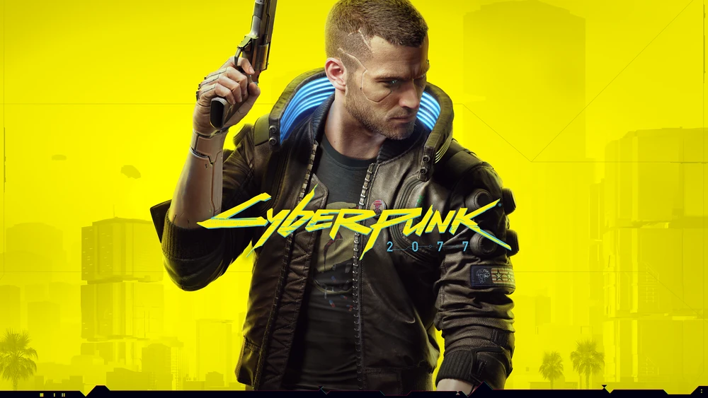

The Witcher 3

Cyberpunk 2077 is an open-world, action-adventure role-playing video game, developed and published by CD Projekt RED that was released December 10, 2020. The game was announced during the 2012 CD Projekt Red Summer Conference as the official video game adaption of Mike Pondsmith's pen and paper RPG Cyberpunk 2020. An expansion for the videogame, called Phantom Liberty, was released on September 26, 2023. An "Ultimate Edition", including the base game and its expansion released on December 5, 2023 alongside Patch 2.1.